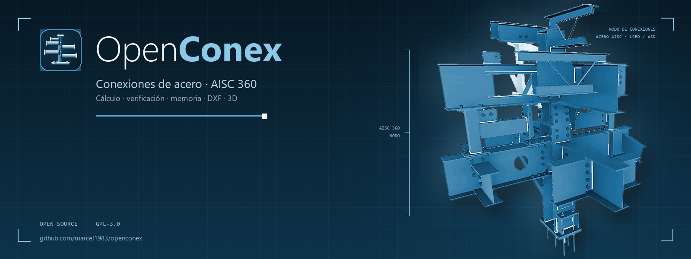
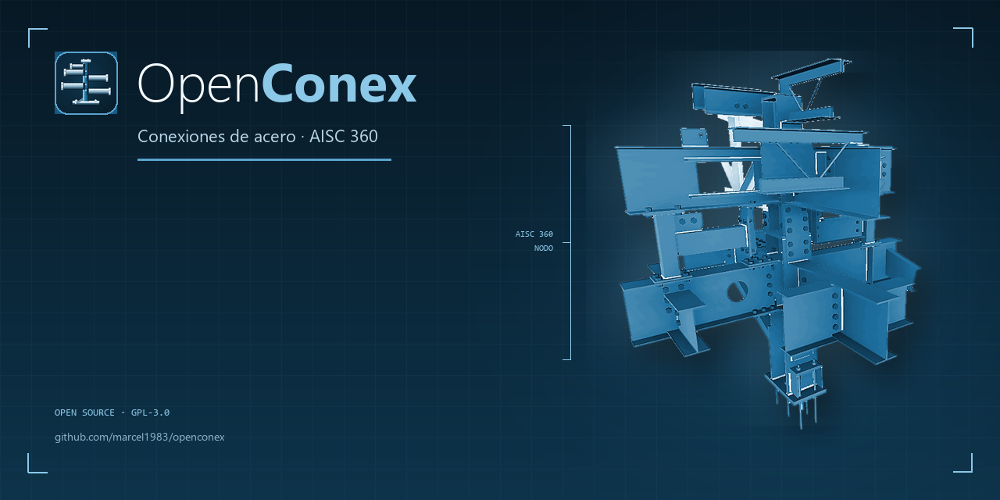
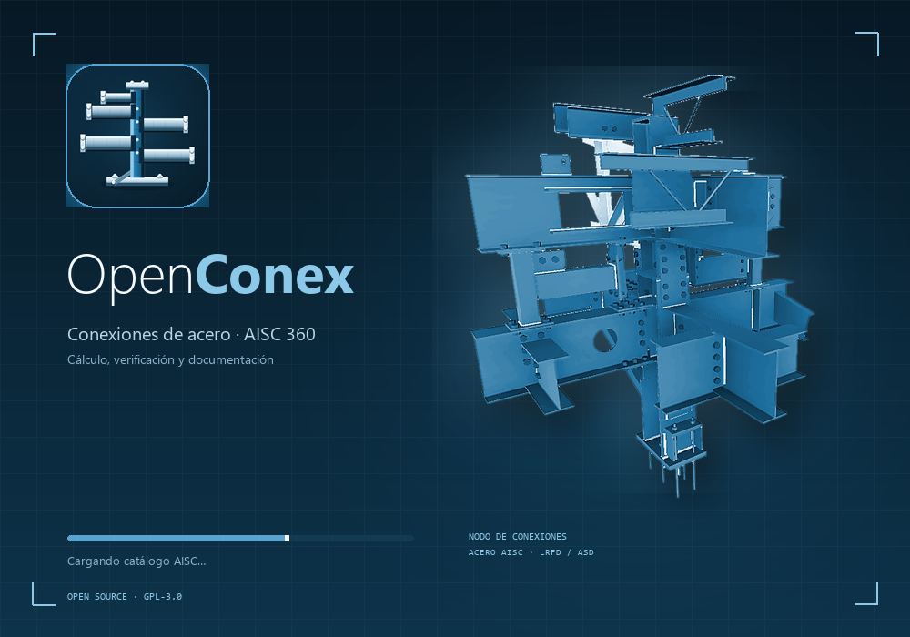
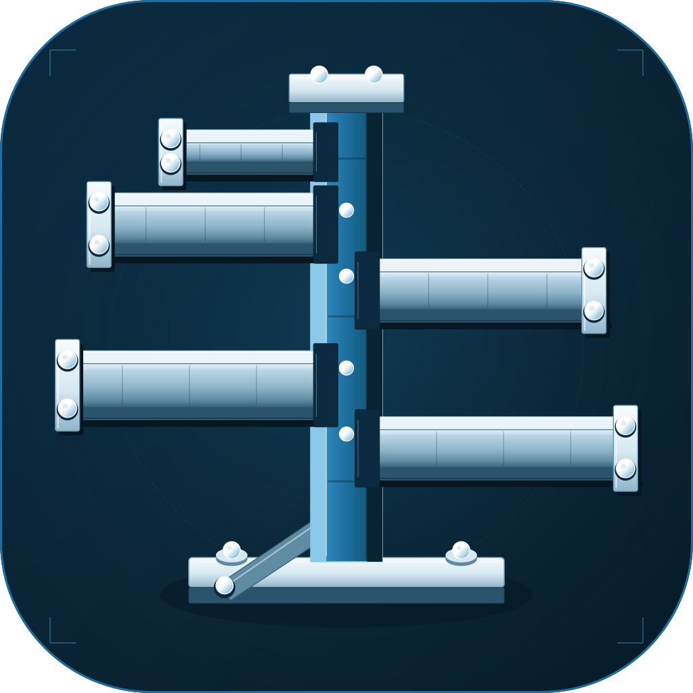
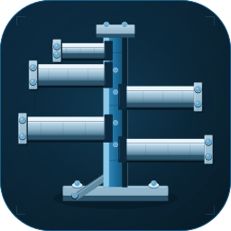
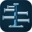
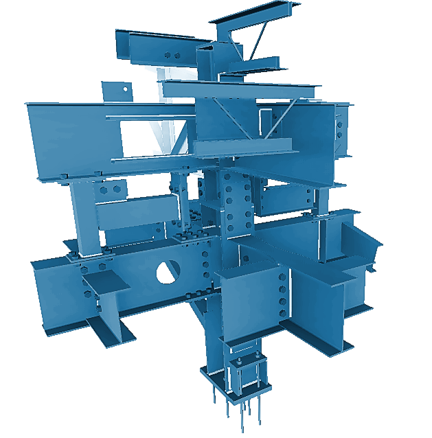

Propuesta cromática · OpenConex · azul AISC
El árbol que conecta
La estructura de conexiones se mantiene como protagonista y se lleva a la paleta de la referencia AISC: azul noche, azul profundo, azul medio, azul claro y blanco. El render se recolorea en azul acero y el icono repite la misma estructura en azul y plata.
Banner para GitHub · 1600 × 600

Social preview de GitHub · 1280 × 640

Splash screen · 1000 × 700

Icono


128 px

64 px
32 px
16 px
El render en azul

Paleta
Azul noche#071824
Azul profundo#0D334A
Azul AISC#1D6F9F
Azul medio#2E86B8
Azul claro#5AA3CE
Azul hielo#8CC8E8
Blanco azulado#D6E8F2
Blanco#F5FAFD
Idea de uso: el banner abre el README, el social preview se configura en el repositorio y el splash aparece antes de la ventana principal. El icono conserva la lectura en 16 y 32 px.